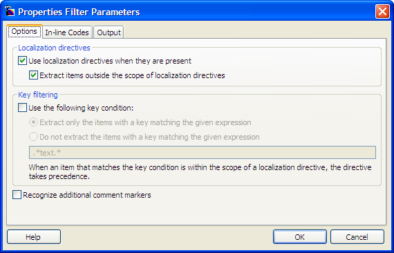
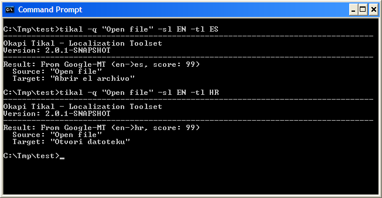

Screen Shots
Okapi Framework
Screen Shots

|
Screen Shots |
Okapi FrameworkScreen Shots |
|
|
Rainbow - The main window of Rainbow, with the Input List 1 tab (on Windows XP)

Rainbow - The Languages and Encoding tab (on Ubuntu):

Rainbow - The Other Settings tab (on Windows Vista):

Rainbow - Character information dialog box (on Windows XP):

Encoding Conversion - The options for the Encoding Conversion utility (on Macintosh):

Search and Replace - The options for the Search and Replace utility (on Windows XP):

Translation Package Creation - The selection of the type of package to generate (on Ubuntu)

Regex Filter - The editor to modify the parameters for the RegEx filter component (on Windows XP):

Properties Filter - The editor to modify the parameters for the Properties filter component (on Windows Vista):

Filter Configurations - The default configurations dialog box (on Xubuntu)

Ratel - The main window (on Kubuntu):

Ratel - Editing a segmentation rule (on Windows XP):

Ratel - Editing groups and options (on Windows XP):

Tikal - Extraction command (on Windows XP)

Tikal - Simple translation query to Google (on Macintosh)

Tikal - Query of a Translate Toolkit TM server (on Windows XP)

Ratel and Rainbow (on Ubuntu)